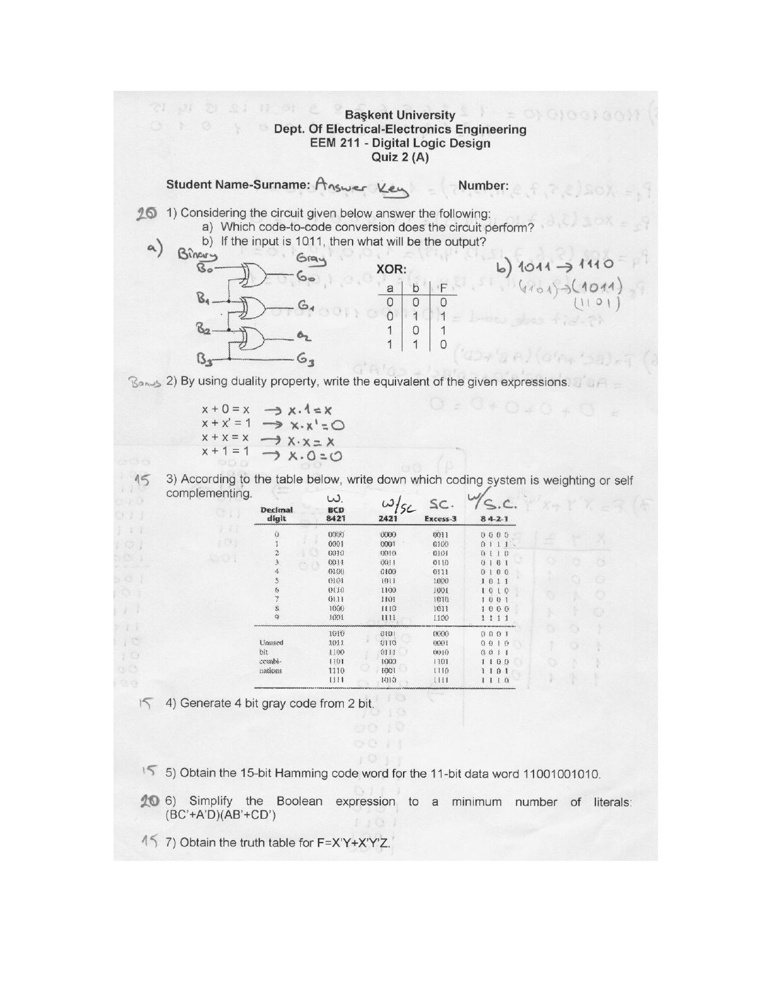
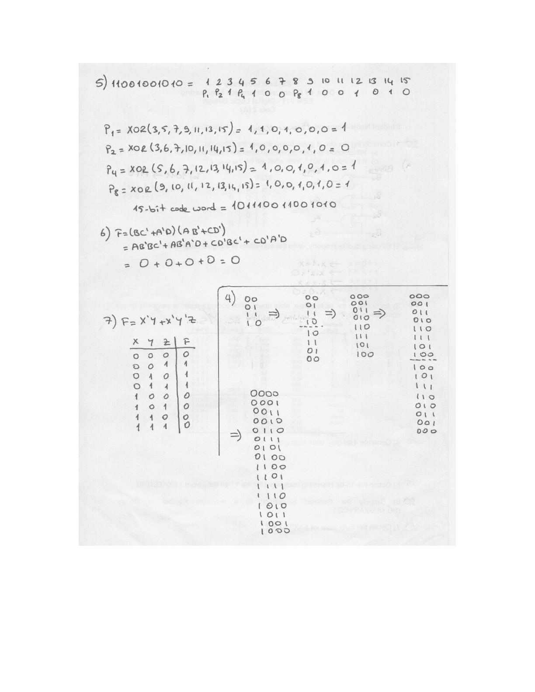
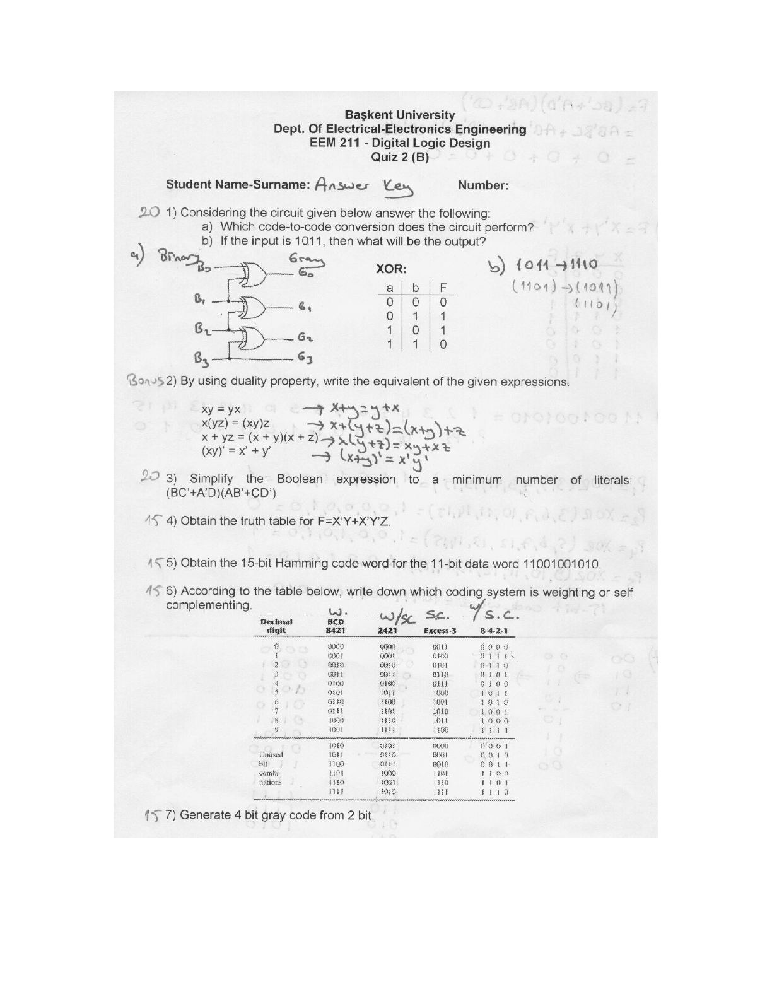
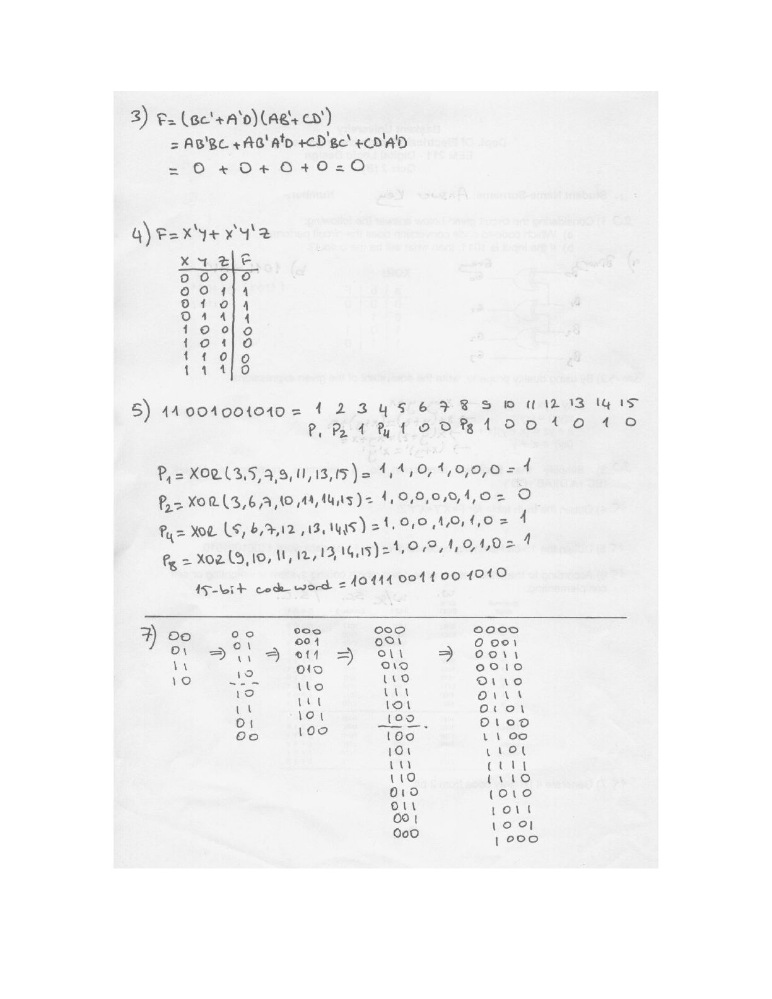

· EEM211
EEM211 Digital Logic Design: Quiz 2 Answer Key (2006)
EEM211 – Sayısal Mantık Tasarımı · 20.10.2006 · 16.10.2026
This post is the answer key for Quiz 2 of the Başkent University course EEM 211 Digital Logic Design, held in October 2006. The questions in Groups A and B are the same; only their order and the expressions in the duality question differ. The questions are printed and the solutions are handwritten; the file information lists Evren Ferhat Emekdaş as the author. Topics: code conversion, Gray code, Hamming code and Boolean algebra. The original Word file can be downloaded at the end of the post.
Quiz 2 (A)

Question 1: Code converter circuit (20 points)
Considering the circuit given below answer the following: a) Which code-to-code conversion does the circuit perform? b) If the input is 1011, then what will be the output?
In the circuit, B3 goes directly to output G3; the other outputs are the XOR of adjacent input bits: G2 = B3 ⊕ B2, G1 = B2 ⊕ B1, G0 = B1 ⊕ B0. The truth table of the XOR is also given on the sheet:
| a | b | F |
|---|---|---|
| 0 | 0 | 0 |
| 0 | 1 | 1 |
| 1 | 0 | 1 |
| 1 | 1 | 0 |
- a) The circuit performs a binary to Gray code conversion.
- b) 1011 → 1110
Question 2: Duality property (bonus)
By using duality property, write the equivalent of the given expressions.
| Expression | Dual |
|---|---|
| x + 0 = x | x · 1 = x |
| x + x' = 1 | x · x' = 0 |
| x + x = x | x · x = x |
| x + 1 = 1 | x · 0 = 0 |
Question 3: Weighted and self-complementing codes (15 points)
According to the table below, write down which coding system is weighting or self complementing.
The question gives a table of the BCD 8421, 2421, Excess-3 and 84-2-1 codes (including the unused bit combinations). Answer:
| Code | Answer |
|---|---|
| BCD 8421 | Weighted (W.) |
| 2421 | Weighted and self-complementing (W/SC) |
| Excess-3 | Self-complementing (SC.) |
| 84-2-1 | Weighted and self-complementing (W/S.C.) |
Question 4: 4-bit Gray code from 2-bit (15 points)
Generate 4 bit gray code from 2 bit.
In the solution, the code is extended step by step using the reflection method: the list is mirrored and written below in reverse order, then 0 is prepended to the upper half and 1 to the lower half.
- 2 bits: 00, 01, 11, 10
- 3 bits: 000, 001, 011, 010, 110, 111, 101, 100
- 4 bits: 0000, 0001, 0011, 0010, 0110, 0111, 0101, 0100, 1100, 1101, 1111, 1110, 1010, 1011, 1001, 1000
Question 5: 15-bit Hamming code (15 points)
Obtain the 15-bit Hamming code word for the 11-bit data word 11001001010.
The parity bits are placed in positions 1, 2, 4 and 8, and the data bits in the remaining positions:
| Position | 1 | 2 | 3 | 4 | 5 | 6 | 7 | 8 | 9 | 10 | 11 | 12 | 13 | 14 | 15 |
|---|---|---|---|---|---|---|---|---|---|---|---|---|---|---|---|
| Bit | P1 | P2 | 1 | P4 | 1 | 0 | 0 | P8 | 1 | 0 | 0 | 1 | 0 | 1 | 0 |
- P1 = XOR(3, 5, 7, 9, 11, 13, 15) = XOR(1, 1, 0, 1, 0, 0, 0) = 1
- P2 = XOR(3, 6, 7, 10, 11, 14, 15) = XOR(1, 0, 0, 0, 0, 1, 0) = 0
- P4 = XOR(5, 6, 7, 12, 13, 14, 15) = XOR(1, 0, 0, 1, 0, 1, 0) = 1
- P8 = XOR(9, 10, 11, 12, 13, 14, 15) = XOR(1, 0, 0, 1, 0, 1, 0) = 1
15-bit code word: 101110011001010
Question 6: Boolean simplification (20 points)
Simplify the Boolean expression to a minimum number of literals: (BC'+A'D)(AB'+CD')
F = (BC' + A'D)(AB' + CD') = AB'BC' + AB'A'D + CD'BC' + CD'A'D = 0 + 0 + 0 + 0 = 0
Question 7: Truth table (15 points)
Obtain the truth table for F=X'Y+X'Y'Z.
| X | Y | Z | F |
|---|---|---|---|
| 0 | 0 | 0 | 0 |
| 0 | 0 | 1 | 1 |
| 0 | 1 | 0 | 1 |
| 0 | 1 | 1 | 1 |
| 1 | 0 | 0 | 0 |
| 1 | 0 | 1 | 0 |
| 1 | 1 | 0 | 0 |
| 1 | 1 | 1 | 0 |

Quiz 2 (B)
Group B asks the same questions in a different order: 1) Gray converter circuit, 2) duality property (bonus), 3) simplification, 4) truth table, 5) Hamming code, 6) code table, 7) 4-bit Gray code from 2-bit. The answers are the same as in Group A; only the expressions in the duality question differ:
| Expression | Dual |
|---|---|
| xy = yx | x + y = y + x |
| x(yz) = (xy)z | x + (y + z) = (x + y) + z |
| x + yz = (x + y)(x + z) | x(y + z) = xy + xz |
| (xy)' = x' + y' | (x + y)' = x'y' |

